Menú
Tipos de Instance
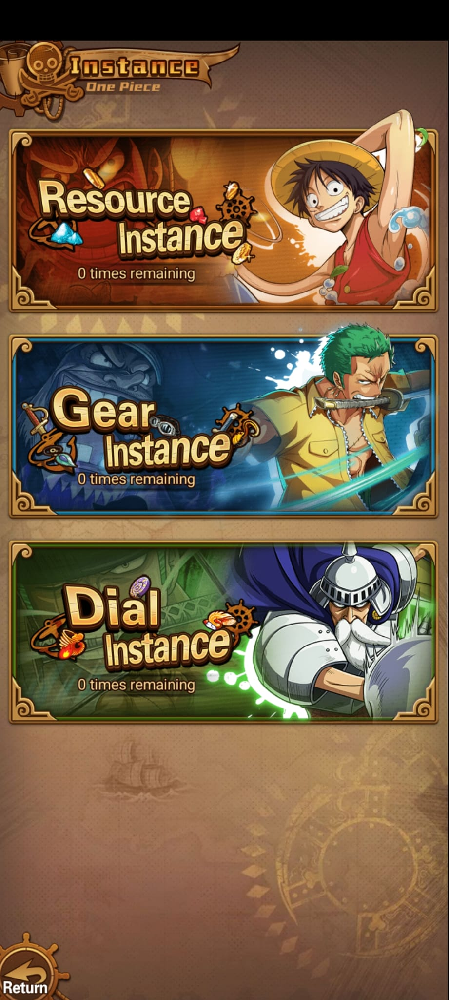
Mazmorras diarias
Instance agrupa mazmorras de recursos. Las capturas muestran tres ramas principales: Resource Instance, Gear Instance y Dial Instance. Cada una usa stages y el botón Raid para gastar intentos y obtener recompensas.
Menú

Resource Instance
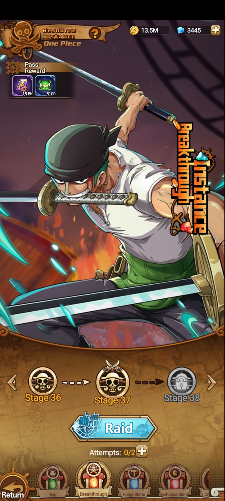
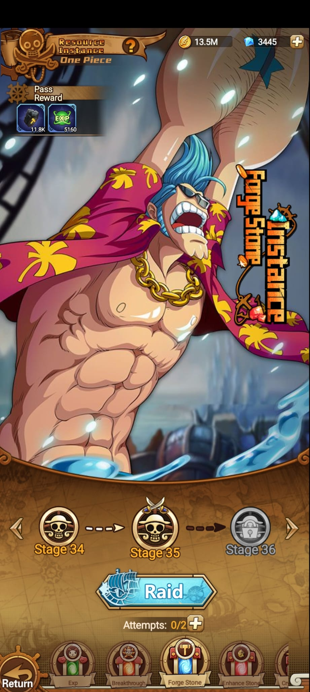
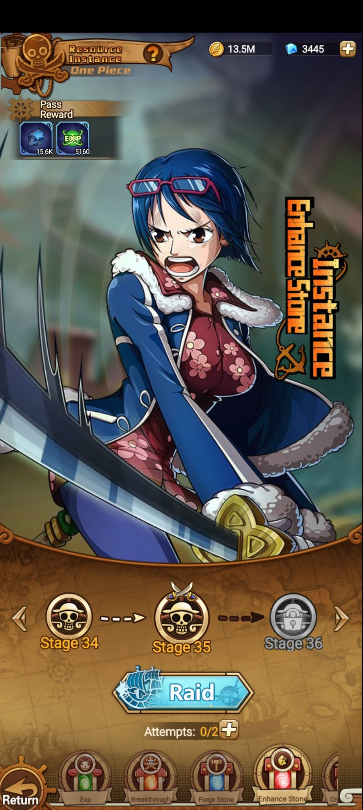
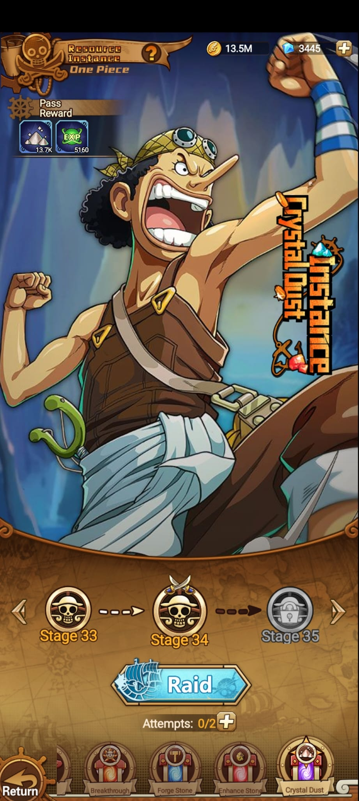
Gear y Dial
Rama independiente para farmear piezas de gear/equipo. Es una instancia de materiales, igual que Resource, pero enfocada en gear.
Rama independiente para farmear diales. Usa stages e intentos como las demas, pero entrega otro tipo de material.
Resource, Gear y Dial se leen como tres granjas separadas. Se elige la rama segun el material que falte.
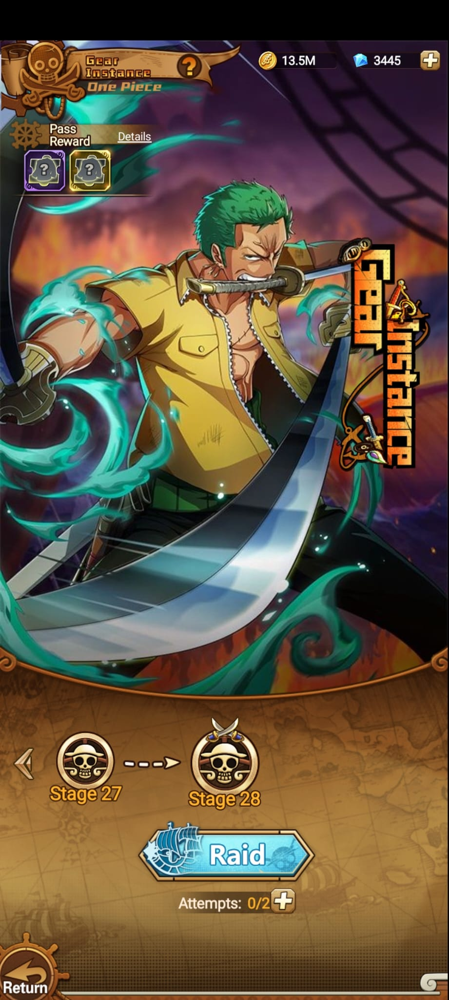
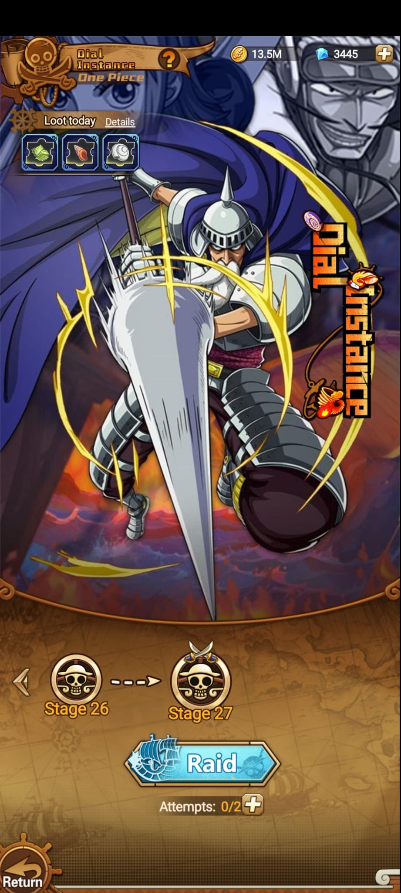
Intentos y gemas
Las instancias muestran 2 intentos diarios base. Cuando se gastan, el botón + permite comprar intentos extra con gemas.
En las instancias básicas se pueden comprar intentos extra por 60 gemas, hasta dos compras. Luego aparece un intento extra de 120 gemas.
Gear Instance y Dial Instance son ramas separadas y sus intentos extra cuestan 120 gemas directamente.
Materiales clave
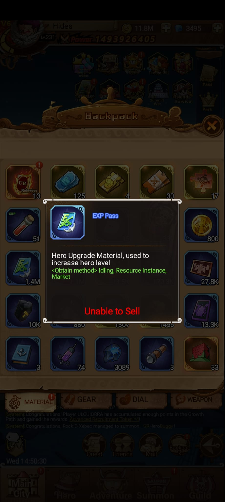
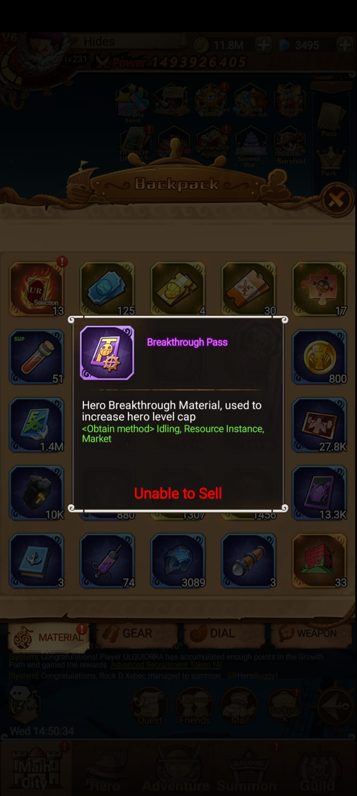
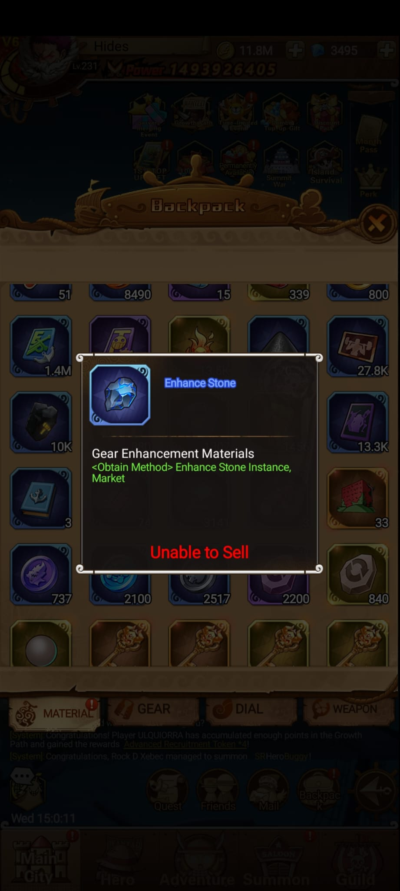
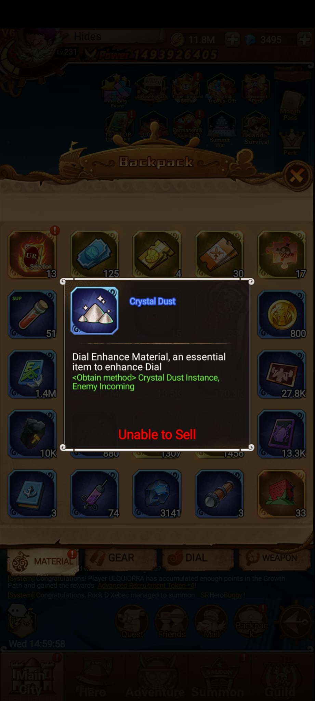
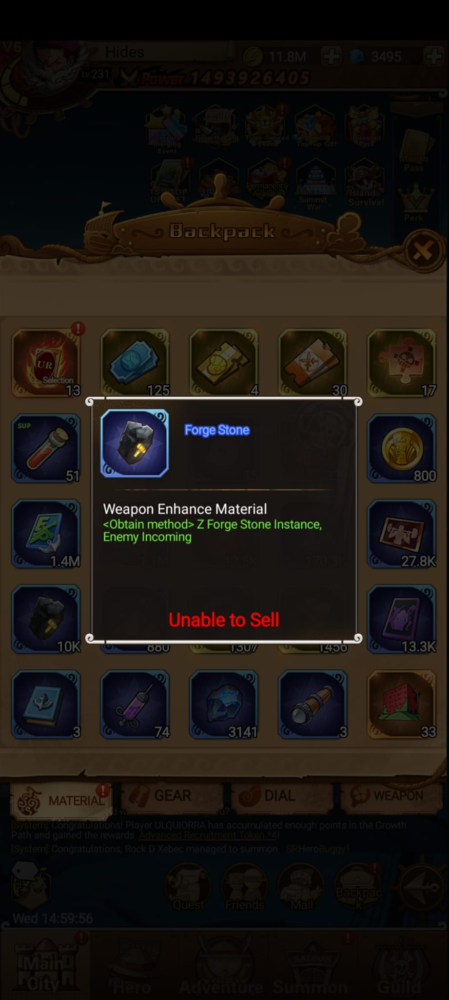
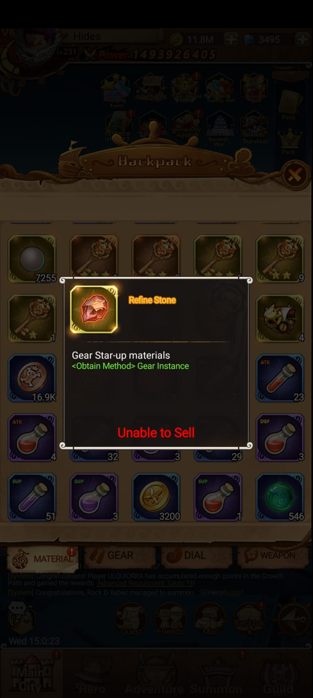
Lectura
| Elemento | Observado | Uso probable |
|---|---|---|
| Raid | Botón central en cada instancia. | Permite reclamar o repetir el stage usando intentos. |
| Attempts | 0/2 visible. | Hay 2 intentos diarios base; los extra cuestan gemas según la rama. |
| Stages | Se ven progresiones como 33 -> 34, 34 -> 35 y 36 -> 37. | Subir stages mejora o cambia las recompensas disponibles. |
| Bloqueo | Stage 35/36/38 aparecen con candado en algunas vistas. | Hay etapas bloqueadas hasta cumplir requisitos de poder o progreso. |
| Resource tabs | Exp, Breakthrough, Forge Stone, Enhance Stone, Crystal Dust. | Sirve para farmear materiales concretos según la mejora que necesites. |
| Gear Instance | Stage 27 -> 28, recompensa de gear/equipo. | Se usa cuando faltan piezas o materiales de equipo. |
| Dial Instance | Stage 26 -> 27, recompensa de diales. | Se usa cuando faltan diales o materiales asociados a diales. |